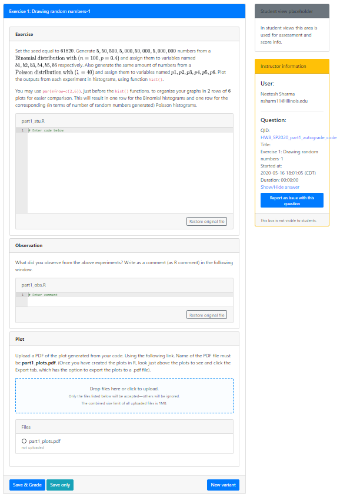

Another example question R autograder
By Neetesh Sharma (Department of CEE, University of Illinois, Urbana-Champaign, IL, USA)
About
This is just a minimalistic run through for an example R auto-graded question in Prairie Learn. The question I explain has both auto-graded and manually graded elements. The QID is HW8_SP2020_part1_autograde_code.
Directory Structure
HW8_SP2020_part1_autograde_code
│ info.json
│ part1_in.R
│ part1_obs_in.R
│ question.html
│
└───tests
│ part1.R
│ points.json
│
└───tests
test_00.R
test_01.R
test_02.R
test_03.R
test_04.R
test_05.R
test_06.R
test_07.R
test_08.R
test_09.R
test_10.R
test_11.R
Explaining the files
info.json
{
"uuid": "09b1ad17-f022-4189-b5ce-250743b8f969",
"title": "Exercise 1: Drawing random numbers-1",
"topic": "Basic R simulation",
"tags": ["SP20","easy","Sotiria","code"],
"type": "v3",
"singleVariant": true,
"gradingMethod": "External",
"externalGradingOptions": {
"enabled": true,
"image": "stat430/pl",
"serverFilesCourse": ["r_autograder/"],
"entrypoint": "/grade/serverFilesCourse/r_autograder/run.sh",
"timeout": 60
}
}
If you are coding a new problem while using the same autograder, the things to change would be the uuid, title, topic, tags, and timeout under the externalGradingOptions. The timeout is the time in seconds that is allowed for each student submission to be processed. Submission is considered incorrect if it runs longer than the timeout duration. Try to keep it minimum (typically 5 to 10 seconds for a small problem, simulations take longer).
question.html
<div class="card my-2">
<div class="card-header">
<b>Exercise</b>
</div>
<div class="card-body">
<pl-question-panel>
<p>
Set the seed equal to $61820$. Generate $5, 50, 500, 5,000, 50,000, 5,000,000$ numbers from a $\text{Binomial distribution with } (n=100, p=0.4)$ and assign them to variables named $b1, b2, b3, b4, b5, b6$ respectively. Also generate the same amount of numbers from a $\text{Poisson distribution with } (λ=40)$ and assign them to variables named $p1, p2, p3, p4, p5, p6$. Plot the outputs from each experiment in histograms, using function <code>hist()</code>.
</p>
<p>You may use <code>par(mfrow=c(2,6))</code>, just before the <code>hist()</code> functions, to organize your graphs in $2$ rows of $6$ plots for easier comparison. This will result in one row for the Binomial histograms and one row for the corresponding (in terms of number of random numbers generated) Poisson histograms.</p>
<pl-file-editor file-name="part1_stu.R" ace-mode="ace/mode/r" source-file-name="part1_in.R"></pl-file-editor>
</pl-question-panel>
<pl-submission-panel>
<pl-file-preview></pl-file-preview>
<pl-external-grader-results></pl-external-grader-results>
</pl-submission-panel>
</div>
</div>
<div class="card my-2">
<div class="card-header">
<b>Observation</b>
</div>
<div class="card-body">
<pl-question-panel>
<p>
What did you observe from the above experiments? Write as a comment (as R comment) in the following window.
</p>
<pl-file-editor file-name="part1_obs.R" ace-mode="ace/mode/python" source-file-name="part1_obs_in.R" min-lines="3" auto-resize="true">
</pl-file-editor>
</div>
</div>
<div class="card my-2">
<div class="card-header">
<b>Plot</b>
</div>
<div class="card-body">
<pl-question-panel>
<p>
Upload a PDF of the plot generated from your code. Using the following link. Name of the PDF file must be <b>part1_plots.pdf</b>. (Once you have created the plots in R, look just above the plots to see and click the Export tab, which has the option to export the plots to a .pdf file).
</p>
<pl-file-upload file-names="part1_plots.pdf"></pl-file-upload>
<pl-submission-panel>
<pl-file-preview></pl-file-preview>
<pl-external-grader-results></pl-external-grader-results>
</pl-submission-panel>
</div>
</div>
This is a three part questions, the first card shows the autograded portion. The second card is the manually graded comment, and the third card is the manually graded .pdf plot file.
Specifically in the code snippet
<pl-file-editor file-name="part1_stu.R" ace-mode="ace/mode/r" source-file-name="part1_in.R"></pl-file-editor>
the file-name variable is the what the student submission will be saved as, whereas source-file-name
is the starter code which the students will see, and that we need to provide.
part1_in.R
# Enter code below
part1_obs_in.R
# Enter comment
These are the starter code the students see in the code input window for each card respectively.
Directory test
This directory is only relevant to the autograded portion of the question.
First the two files:
part1.R
set.seed(61820)
b1 = rbinom(5,size=100,prob=0.4)
b2 = rbinom(50,size=100,prob=0.4)
b3 = rbinom(500,size=100,prob=0.4)
b4 = rbinom(5000,size=100,prob=0.4)
b5 = rbinom(50000,size=100,prob=0.4)
b6 = rbinom(5000000,size=100,prob=0.4)
p1 = rpois(5,40)
p2 = rpois(50,40)
p3 = rpois(500,40)
p4 = rpois(5000,40)
p5 = rpois(50000,40)
p6 = rpois(5000000,40)
par(mfrow=c(2,6))
hist(b1)
hist(b2)
hist(b3)
hist(b4)
hist(b5)
hist(b6)
hist(p1)
hist(p2)
hist(p3)
hist(p4)
hist(p5)
hist(p6)
This file contains the code, which is the correct solution of the problem.
points.json
[
{
"name":"Test b1",
"file":"test_00.R",
"max_points":2
},
{
"name":"Test b2",
"file":"test_01.R",
"max_points":2
},
{
"name":"Test b3",
"file":"test_02.R",
"max_points":2
},
{
"name":"Test b4",
"file":"test_03.R",
"max_points":2
},
{
"name":"Test b5",
"file":"test_04.R",
"max_points":2
},
{
"name":"Test b6",
"file":"test_05.R",
"max_points":2
},
{
"name":"Test p1",
"file":"test_06.R",
"max_points":2
},
{
"name":"Test p2",
"file":"test_07.R",
"max_points":2
},
{
"name":"Test p3",
"file":"test_08.R",
"max_points":2
},
{
"name":"Test p4",
"file":"test_09.R",
"max_points":2
},
{
"name":"Test p5",
"file":"test_10.R",
"max_points":2
},
{
"name":"Test p6",
"file":"test_11.R",
"max_points":2
}
]
This file list the name of the unit tests (make them relevant to what you are testing as the student will see which tests the student passed or not and modify their submission accordingly), the name of the file for all the unit test, and the points for passing the unit tests.
The unit tests themselves are in another subdirectory named tests, lets call it the nested directory tests.
Nested Directory tests
I will just explain one of the tests
# load student results
Sys.chmod("/grade/student/part1_stu.R", mode="0664")
student <- unix::eval_safe({source("/grade/student/part1_stu.R"); b1}, uid=1001)
# load correct results
source("/grade/tests/part1.R")
correct <- b1
#compare
using(ttdo)
expect_equivalent_with_diff(student, correct, mode="unified", format="ansi256")
The unit tests have a simple structure with three steps:
Load the student results by running the submitted code, and extracting any variable or function evaluation of interest. The complicated way of running the student code is due to security considerations.
Run the correct source code and extract the corresponding benchmark result.
Compare the two
Finally the questions renders as follows

Closing statement
This example does not follow all the recommended guidelines, for example it is recommended that the student code submission be a function and not a script. However, CEE202 being a beginner course the students are expected to only work with basic scripting. Maybe the question can be improved in future if we wrap the student code in the back end to be run as a function. Furthermore, I would recommend not having different grading methods in the same question, as it confuses the students on the total marks they got, as the manually graded parts are uploaded separately. However, this was among the messiest questions we had so it was a good example to explain various possibilities. Thanks!
Useful link: An R Autograder for PrarieLearn